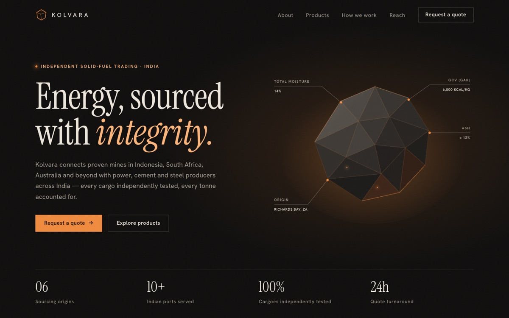
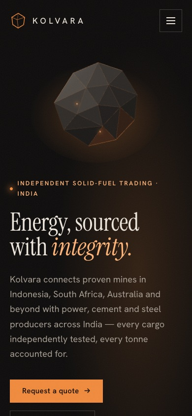

CONCEPT 01
Obsidian
Dark, premium and editorial. The closest to the Verslin feel, refreshed for 2026.
- Faceted coal illustration with ember glow and live spec callouts
- Big-statement typography, spec cards for every product
- Calm, confident motion (respects reduced-motion settings)
Best if Vipin wants continuity with Verslin's dark/orange identity, but sharper.
Open concept